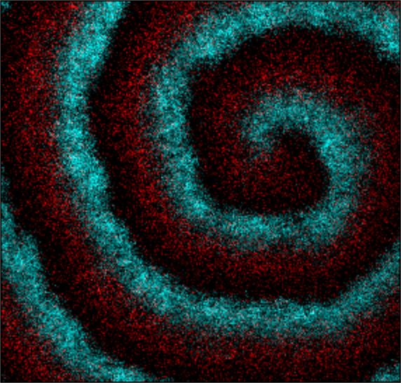
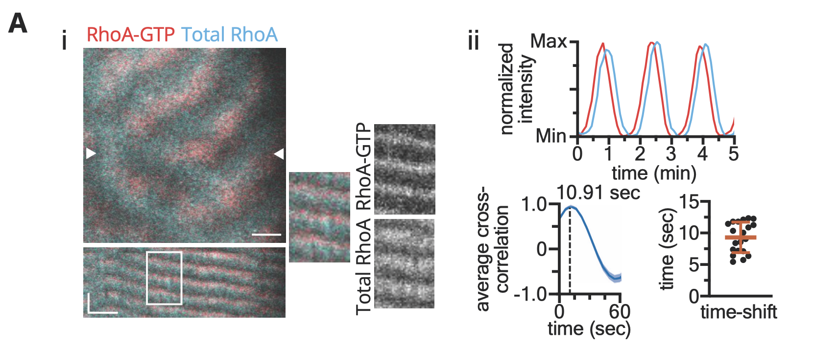
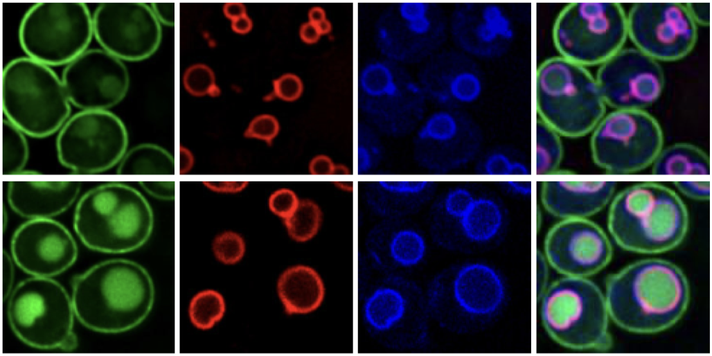

Bement Lab, University of Wisconsin-Madison: Investigating the basis of positive feedback in cortical excitability during cytokinesis. My work focuses on the interaction between Rho and Ect2, utilizing live-cell imaging to dissect these complex regulatory mechanisms.

Bement Lab, University of Wisconsin-Madison: Rho GTPases organize the cell cortex through dynamic, self-organizing patterns, but the relationship between Rho activity and membrane accumulation was unclear. In collaboration with the Goryachev Lab, I simultaneously imaged total and active RhoA and found that RhoA activation precedes membrane accumulation, enabling discrimination between competing models of cortical patterning.

Ming Li Lab, University of Michigan: Studied the ubiquitination and degradation pathways of lysosomal membrane proteins. Conducted whole-genome high-throughput screenings to identify proteins involved in the assembly of vacuole membrane protein complexes.